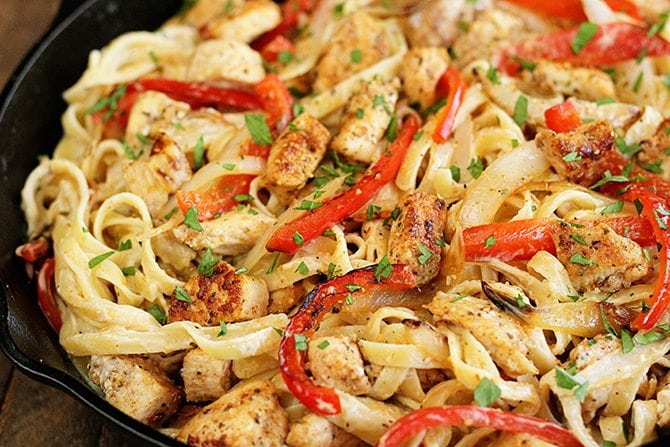

Cajun Chicken Pasta

Description
This is a recipe for a great plate of Cajun Chicken Pasta.
This breaks away form the norm of a regular pasta with some chicken and adds some more flavor with the addition of the cajun seasoning. Along with our other peppers and garlic spices being added this is sure to give you a kick!
Ingredients
- 4 ounces linguine pasta
- 2 skinless, boneless chicken breast halves
- 2 teaspoons of Cajun seasoning
- 2 tablespoons of butter
- 1 red bell pepper, sliced
- 1 green pepper, sliced
- 4 fresh mushrooms, sliced
- 1 green onion, chopped
- 1 cup of heavy cream
- 1/4th teaspoon dried basil
- 1/4th teaspoon lemon pepper
- 1/4th teaspoon salt
- 1/8th teaspoon garlic powder
- 1/8th teaspoon ground black pepper
- 1/4th cup grated Parmesan cheese
Steps
- Bring a large pot of lightly salted water to a boil. Add pasta and cook for 8 to 10 minutes or until al dente; drain.
- Place the chicken and the Cajun seasoning in a plastic bag. Shake to coat. In a large skillet over medium heat, saute the chicken in butter or margarine until almost tender (5 to 7 minutes).
- Add the red bell pepper, green bell pepper, mushrooms and green onion. Saute and stir for 2 to 3 minutes. Reduce heat.
- Add the cream, basil, lemon pepper, salt, garlic powder and ground black pepper. Heat through. Add the cooked linguine, toss and heat through. Sprinkle with grated Parmesan cheese and serve.